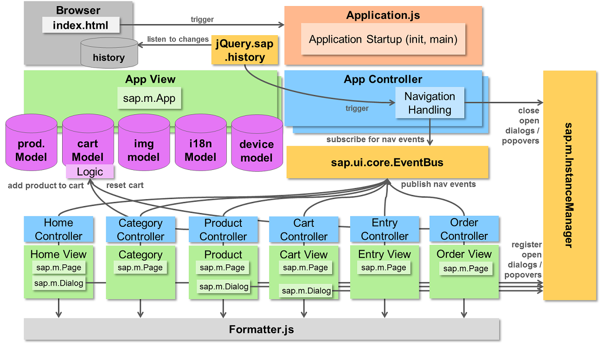

Best Practice for Building Mobile Applications
Goal of this Document
SAPUI5 is not a restrictive UI framework but more a collection of UI controls together with loosely coupled infrastructure components like basic MVC support, data binding, localization and others. This approach offers great flexibilty but also requires more care in application development and will most likely yield in heterogenous application structures.
This document provides a best practice how to structure application projects along the most typical scenarios with a clean and consistent structure. Technically, the whole application could also just be coded into one single HTML file - and the simple "Hello World" applications are built exactly like this to make basic functionality easy to understand. But when creating reasonably complex applications a clean architecture is key for efficient development and maintainability. There are many degrees of freedom where this documentation decides for one of the possible options. E.g. when it comes to the file structure or the granularity of Views or even the usage of the MVC concept at all. This does not mean that other options are wrong. In fact, other options may suit specific applications even better and some decisions also depend on project experience, team setup or plain taste. Nevertheless, this document should provide valuable suggestions for a good application structure, it's just important to know that this is not the only possible or correct way to build SAPUI5 applications.
This document contains sections that refer to concepts or controls which are only available in the mobile library of SAPUI5 ('sap.m'), but most suggestions are the same or very similar for desktop applications.
Shopping Cart App
The concepts are applied to the 'Shopping Cart' demo app, and its source code can also help understand the proposed concepts.
This picture provides an overview of the involved components:

In the beginning the browser loads the web applications's index.html which contains itself only minimal code. The index.html then loads the Application.js which actually launches the application and instantiates the App View which holds the sap.m.App control that serves as root container for all UI controls.
The application user interface is split into six pages: Home, Category, Product, Cart, Entry and Order. These pages are represented each by a view containing the sap.m.Page control and a controller handling the view events. When trigger a navigation to another page an event is send via the EventBus to the App Controller. There are no direct dependencies between views, and those EventBus events are only used for navigation and parameter handover between pages.
To enable the back button of Android devices the jQuery.sap.history plugin is used which listens to changes in the browser history and triggers the App Controller for backward navigation.
The InstanceManager tracks open instances of dialogs and popovers. The App controller checks on backward navigation for open instances and closes them on demand.
There are two data models: The Product Model containing the available goods. The Cart Model contains the items put into the shopping cart. In addition there are two models that contain resources used by the application: The Image Model abstracts from access paths and the i18n Model connects to translated texts.
The Formatter.js class is an example for utility coding that is referenced by all views.
Detailed Guidance
- File Structure – Proposed structure and naming for the file system layout
- index.html - Detailed description how to structure the index.html
- Application.js – An example of the Application.js that starts up the application
- Connecting to the Back End – Guidance how to handle mock data and use HTTP Proxy to overcome the Same-Origin-Policy
- Custom HTML – How to include custom HTML in your apps
- Navigation – A deep dive into navigation handling explaing all about the navigation events, history handling and instance manager
- i18n Model – Explains how to localize your app and setup the i18n model
- Device Model – Explains how adapt declarative views to the device
- Image Model – Explains how to setup the image model
- Utilities – Where to put all the utility stuff (aka reused javascript coding)
- Lazy Loading – How to achieve lazy loading of the pages in the App Controller
- Message Handling - Guides you in the process of showing messages to the user
- Mock Data - Using mock data allows you to test and demo your app without a live service